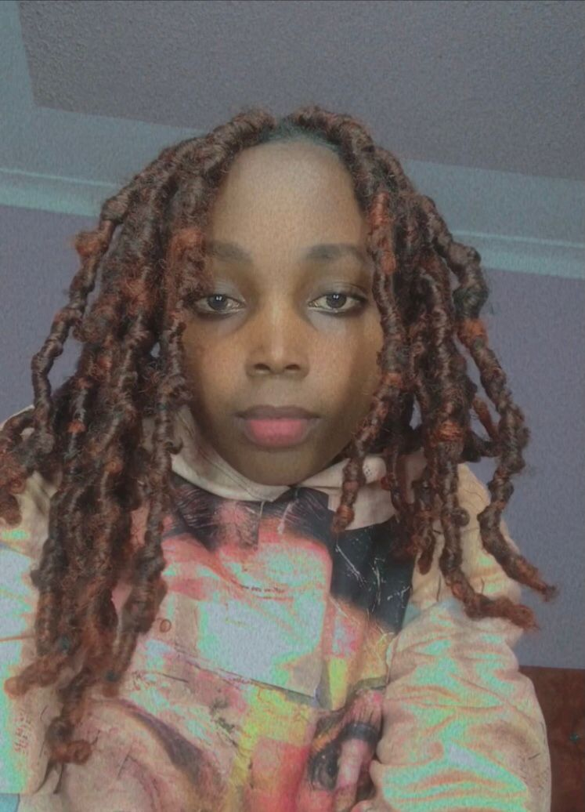

Emily Emerson Cotilda N
About Me
My name is Emily Emerson Cotilda N . I am a BYU student pursuing Software Development. I like learning new languages and so far i can speak three different languages that includes German, Swahili and English. My greatess dream is to become a successful and powerful lady in this world .
My Goals

Fremer Tours and Travel is your trusted companion for unforgettable journeys across Uganda and beyond. We specialize in affordable, guided travel packages, customized to suit every kind of traveler whether you're seeking wildlife safaris, cultural tours, or peaceful getaways. Our expert guides ensure you experience the best of each destination, from the bustling streets of Kampala to the serene shores of Lake Victoria. With us, you can relax and enjoy your adventure, knowing every detail is taken care of. Join us at Fremer Tours and Travel, where we plan, and you enjoy! Whether you're a solo traveler, a couple, or a family, we have the perfect package for you. Explore our offerings and let us help you create memories that will last a lifetime.